Gallery of examples
Complete talks from papers accepted at scientific events, in PDF and in editable formats. Get inspired, copy, adapt and make the most of them. They are free to use.
These talks had different slot lengths in their sessions, which explains the variation in slide count. Some follow every recommendation on this site, others follow most of them.
Most decks are in Portuguese, since they come from Brazilian events. The structure, the pacing and the visual decisions read just as well in any language.
Event
All
SBSeg 2026
DSN 2023
SBSeg 2023
WRSeg 2023
SBSeg 2022
SBSeg 2021
SBRC 2020
SBSeg 2020
WRSeg 2020
WRSeg 2018
Kind of work
All
DSN
SBRC, networks symposium
Tools track
Main track, full paper
Regional workshop
Undergraduate research workshop
40 examples
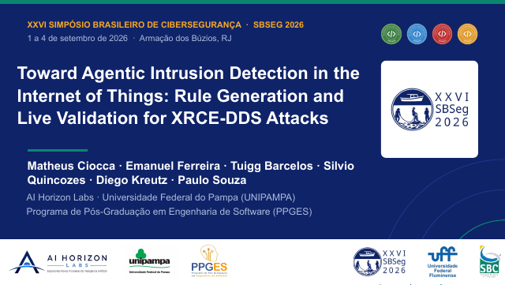
SBSeg 2026 · Tools track · 21 slides Toward Agentic Intrusion Detection in the Internet of Things: Rule Generation and Live Validation for XRCE-DDS Attacks Matheus Ciocca, Emanuel Ferreira, Tuigg Barcelos, Silvio Quincozes, Diego Kreutz, Paulo Souza
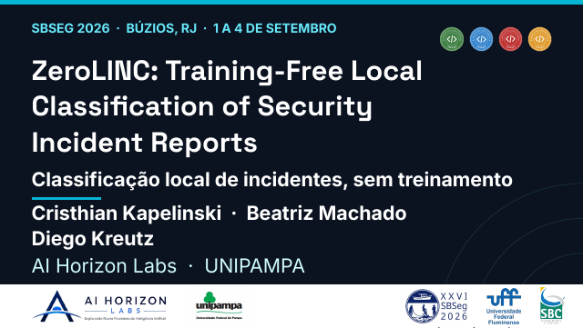
SBSeg 2026 · Tools track · 26 slides ZeroLINC: Training-Free Local Classification of Security Incident Reports Cristhian Kapelinski, Beatriz Machado, Diego Kreutz
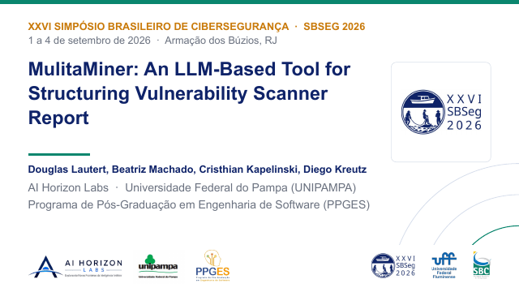
SBSeg 2026 · Tools track · 16 slides MulitaMiner: An LLM-Based Tool for Structuring Vulnerability Scanner Reports Douglas Lautert, Beatriz Machado, Cristhian Kapelinski, Diego Kreutz
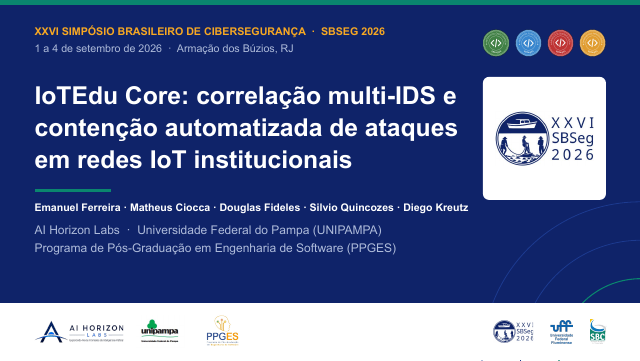
SBSeg 2026 · Tools track · 37 slides IoTEdu Core: correlação multi-IDS e contenção automatizada de ataques em redes IoT institucionais Emanuel Ferreira, Matheus Ciocca, Douglas Fideles, Silvio Quincozes, Diego Kreutz
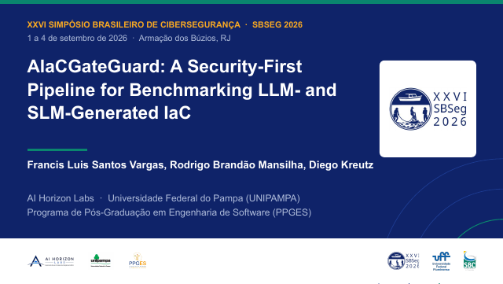
SBSeg 2026 · Tools track · 30 slides AIaCGateGuard: A Security-First Pipeline for Benchmarking LLM- and SLM-Generated IaC Francis Luis Santos Vargas, Rodrigo Brandão Mansilha, Diego Kreutz
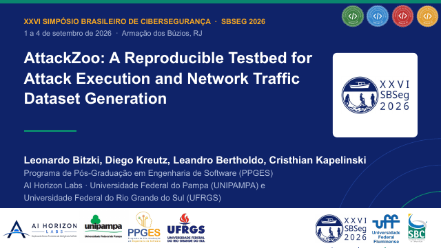
SBSeg 2026 · Tools track · 18 slides AttackZoo: A Reproducible Testbed for Attack Execution and Network Traffic Dataset Generation Leonardo Bitzki, Diego Kreutz, Leandro Bertholdo, Cristhian Kapelinski
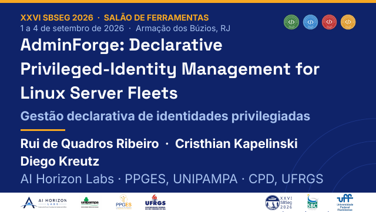
SBSeg 2026 · Tools track · 24 slides AdminForge: Declarative Privileged-Identity Management for Linux Server Fleets Rui de Quadros Ribeiro, Cristhian Kapelinski, Diego Kreutz
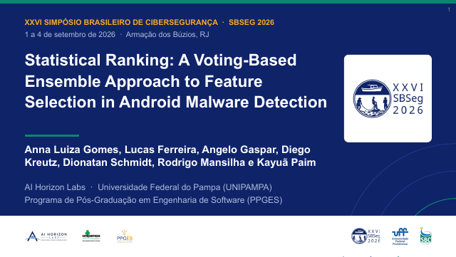
SBSeg 2026 · Main track, full paper · 39 slides Statistical Ranking: A Voting-Based Ensemble Approach to Feature Selection in Android Malware Detection Anna Luiza Gomes, Lucas Ferreira, Angelo Gaspar, Diego Kreutz, Dionatan Schmidt, Rodrigo Mansilha, Kayuã Paim
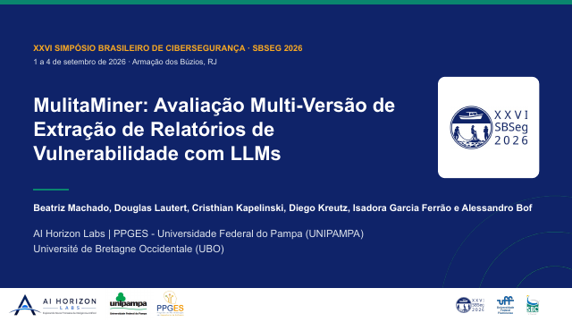
SBSeg 2026 · Main track, full paper · 44 slides MulitaMiner: avaliação multi-versão de extração de relatórios de vulnerabilidade com LLMs Beatriz Machado, Douglas Lautert, Cristhian Kapelinski, Diego Kreutz, Isadora Garcia Ferrão, Alessandro Bof
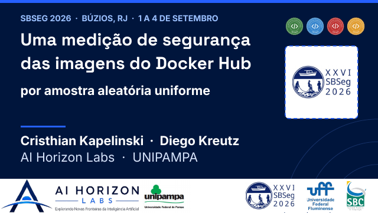
SBSeg 2026 · Main track, full paper · 49 slides Uma medição de segurança das imagens do Docker Hub por amostra aleatória uniforme Cristhian Kapelinski, Diego Kreutz
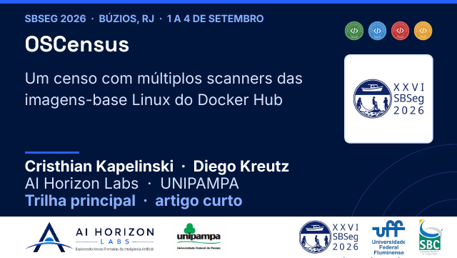
SBSeg 2026 · Main track, full paper · 49 slides OSCensus: um censo com múltiplos scanners das imagens-base Linux do Docker Hub Cristhian Kapelinski, Diego Kreutz
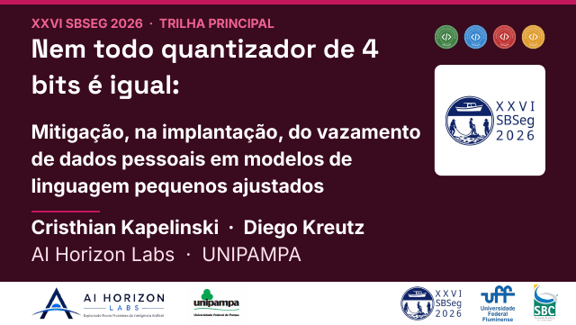
SBSeg 2026 · Main track, full paper · 93 slides Nem todo quantizador de 4 bits é igual: mitigação, na implantação, do vazamento de dados pessoais em modelos de linguagem pequenos ajustados Cristhian Kapelinski, Diego Kreutz
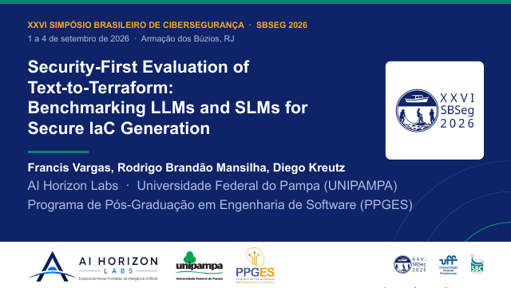
SBSeg 2026 · Main track, full paper · 34 slides Security-First Evaluation of Text-to-Terraform: Benchmarking LLMs and SLMs for Secure IaC Generation Francis Vargas, Rodrigo Brandão Mansilha, Diego Kreutz
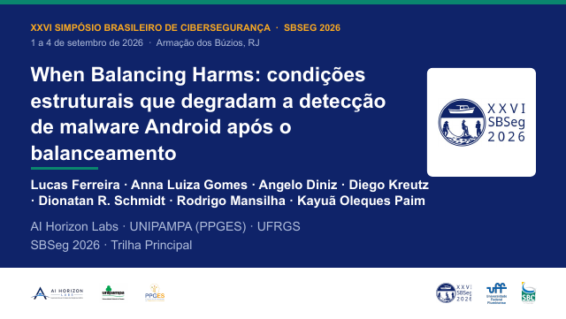
SBSeg 2026 · Main track, full paper · 54 slides When Balancing Harms: condições estruturais que degradam a detecção de malware Android após o balanceamento Lucas Ferreira, Anna Luiza Gomes, Angelo Diniz, Diego Kreutz, Dionatan R. Schmidt, Rodrigo Mansilha, Kayuã Oleques Paim
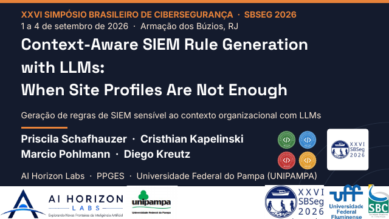
SBSeg 2026 · Main track, full paper · 23 slides Context-Aware SIEM Rule Generation with LLMs: When Site Profiles Are Not Enough Priscila Schafhauzer, Cristhian Kapelinski, Marcio Pohlmann, Diego Kreutz
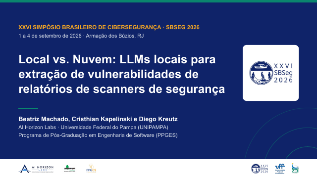
SBSeg 2026 · Undergraduate research workshop · 36 slides Local vs. nuvem: LLMs locais para extração de vulnerabilidades de relatórios de scanners de segurança Beatriz Machado, Cristhian Kapelinski, Diego Kreutz
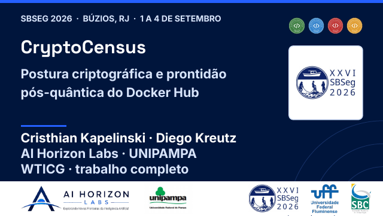
SBSeg 2026 · Undergraduate research workshop · 55 slides CryptoCensus: postura criptográfica e prontidão pós-quântica do Docker Hub Cristhian Kapelinski, Diego Kreutz
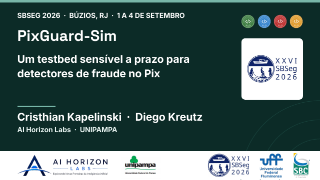
SBSeg 2026 · Undergraduate research workshop · 55 slides PixGuard-Sim: um testbed sensível a prazo para detectores de fraude no Pix Cristhian Kapelinski, Diego Kreutz
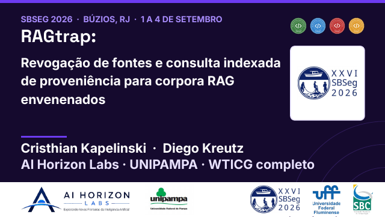
SBSeg 2026 · Undergraduate research workshop · 27 slides RAGtrap: revogação de fontes e consulta indexada de proveniência para corpora RAG envenenados Cristhian Kapelinski, Diego Kreutz
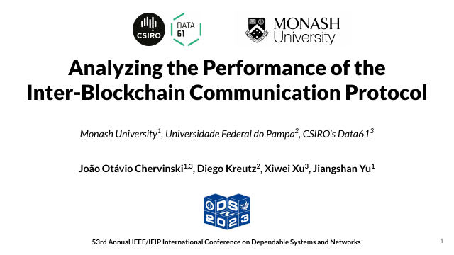
DSN 2023 · DSN · 30 slides Analyzing the Performance of the Inter-Blockchain Communication Protocol João Otávio Chervinski, Diego Kreutz, Xiwei Xu, Jiangshan Yu
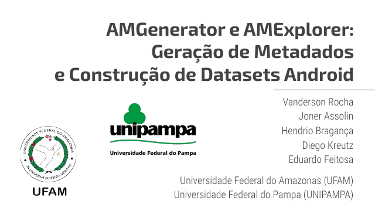
SBSeg 2023 · Tools track · 29 slides AMGenerator e AMExplorer: geração de metadados e construção de datasets Android Vanderson Rocha, Joner Assolin, Hendrio Bragança, Diego Kreutz, Eduardo Feitosa
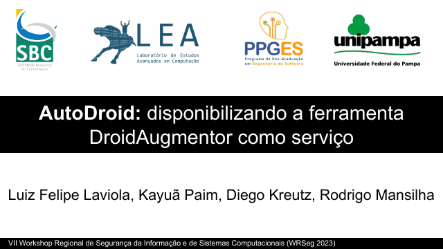
WRSeg 2023 · Regional workshop · 48 slides AutoDroid: disponibilizando a ferramenta DroidAugmentor como serviço Luiz Felipe Laviola, Kayuã Paim, Diego Kreutz, Rodrigo Mansilha
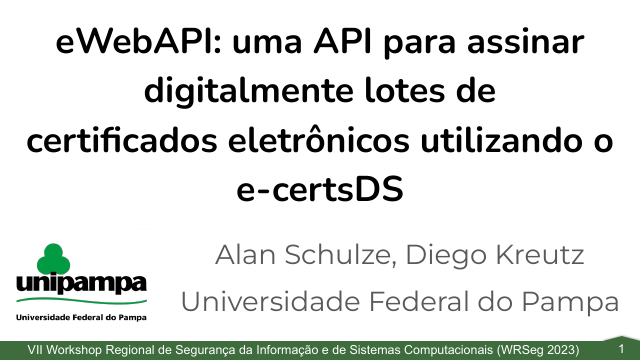
WRSeg 2023 · Regional workshop · 54 slides eWebAPI: uma API para assinar digitalmente lotes de certificados eletrônicos utilizando o e-certsDS Alan Schulze, Diego Kreutz
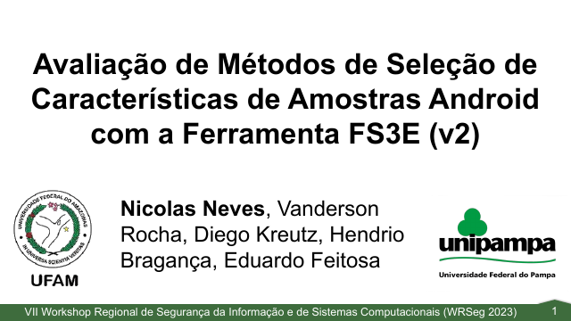
WRSeg 2023 · Regional workshop · 37 slides Avaliação de métodos de seleção de características de amostras Android com a ferramenta FS3E (v2) Nicolas Neves, Vanderson Rocha, Diego Kreutz, Hendrio Bragança, Eduardo Feitosa
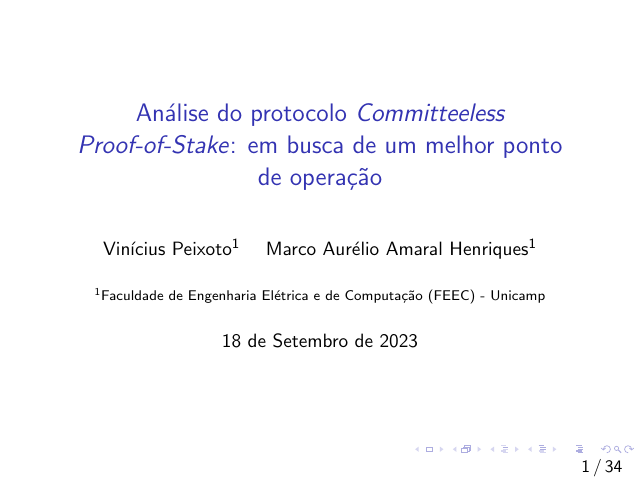
SBSeg 2023 · Undergraduate research workshop · 34 slides Análise do protocolo Committeeless Proof-of-Stake: em busca de um melhor ponto de operação Vinícius Peixoto, Marco Aurélio Amaral Henriques
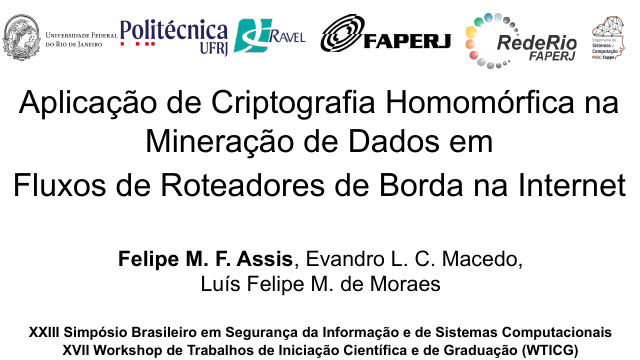
SBSeg 2023 · Undergraduate research workshop · 33 slides Aplicação de criptografia homomórfica na mineração de dados em fluxos de roteadores de borda na Internet Felipe M. F. Assis, Evandro L. C. Macedo, Luís Felipe M. de Moraes
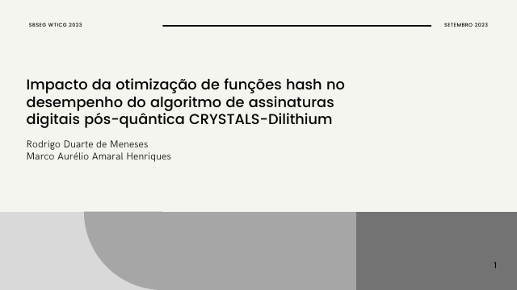
SBSeg 2023 · Undergraduate research workshop · 28 slides Impacto da otimização de funções hash no desempenho do algoritmo de assinaturas digitais pós-quântica CRYSTALS-Dilithium Rodrigo Duarte de Meneses, Marco Aurélio Amaral Henriques
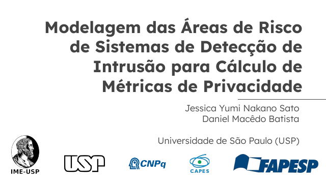
SBSeg 2023 · Undergraduate research workshop · 12 slides Modelagem das áreas de risco de sistemas de detecção de intrusão para cálculo de métricas de privacidade Jessica Yumi Nakano Sato, Daniel Macêdo Batista
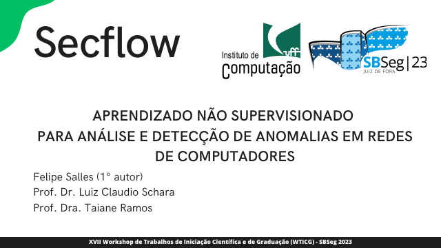
SBSeg 2023 · Undergraduate research workshop · 22 slides SecFlow: aprendizado não supervisionado para análise e detecção de anomalias em redes de computadores Felipe Salles, Luiz Claudio Schara, Taiane Ramos
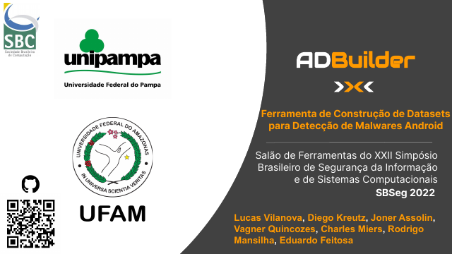
SBSeg 2022 · Tools track · 19 slides ADBuilder: ferramenta de construção de datasets para detecção de malwares Android Lucas Vilanova, Diego Kreutz, Joner Assolin, Vagner Quincozes, Charles Miers, Rodrigo Mansilha, Eduardo Feitosa
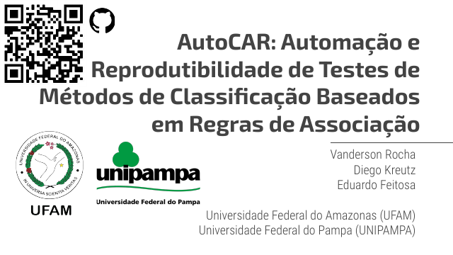
SBSeg 2022 · Tools track · 9 slides AutoCAR: automação e reprodutibilidade de testes de métodos de classificação baseados em regras de associação Vanderson Rocha, Diego Kreutz, Eduardo Feitosa
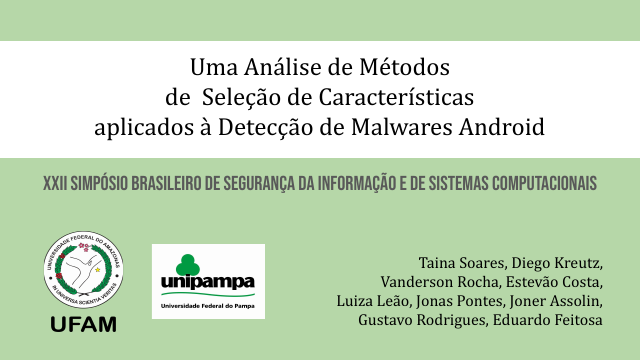
SBSeg 2022 · Main track, full paper · 50 slides Uma análise de métodos de seleção de características aplicados à detecção de malwares Android Taina Soares, Diego Kreutz, Vanderson Rocha, Estevão Costa, Luiza Leão, Jonas Pontes, Joner Assolin, Gustavo Rodrigues, Eduardo Feitosa
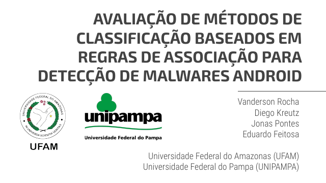
SBSeg 2022 · Main track, full paper · 38 slides Avaliação de métodos de classificação baseados em regras de associação para detecção de malwares Android Vanderson Rocha, Diego Kreutz, Jonas Pontes, Eduardo Feitosa
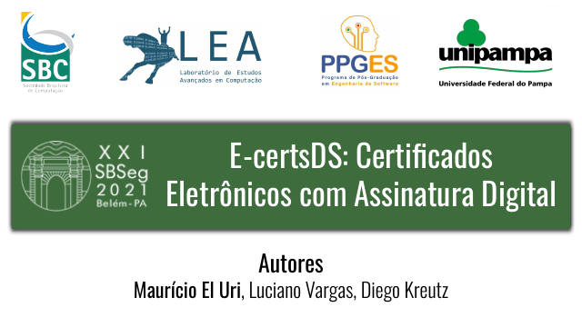
SBSeg 2021 · Tools track · 32 slides e-certsDS: certificados eletrônicos com assinatura digital Maurício El Uri, Luciano Vargas, Diego Kreutz
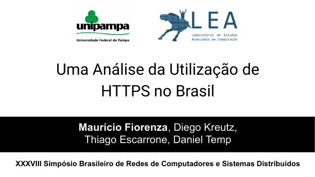
SBRC 2020 · SBRC, networks symposium · 41 slides Uma análise da utilização de HTTPS no Brasil Maurício Fiorenza, Diego Kreutz, Thiago Escarrone, Daniel Temp
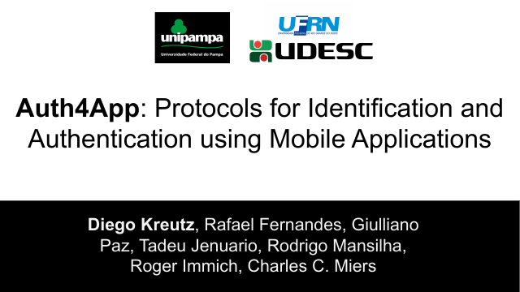
SBSeg 2020 · Main track, full paper · 28 slides Auth4App: Protocols for Identification and Authentication using Mobile Applications Diego Kreutz, Rafael Fernandes, Giulliano Paz, Tadeu Jenuario, Rodrigo Mansilha, Roger Immich, Charles C. Miers
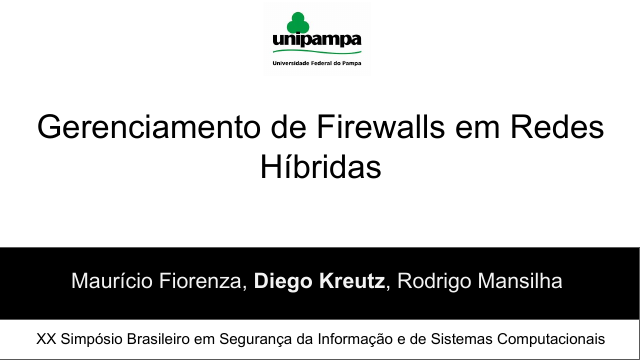
SBSeg 2020 · Main track, full paper · 27 slides Gerenciamento de firewalls em redes híbridas Maurício Fiorenza, Diego Kreutz, Rodrigo Mansilha
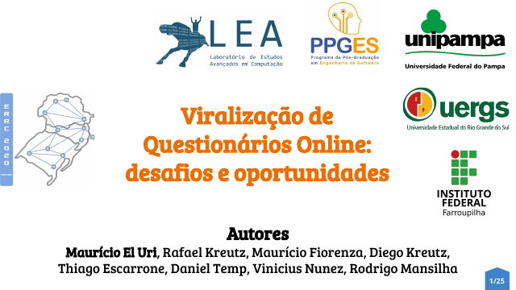
WRSeg 2020 · Regional workshop · 25 slides Viralização de questionários online: desafios e oportunidades Maurício El Uri, Rafael Kreutz, Maurício Fiorenza, Diego Kreutz, Thiago Escarrone, Daniel Temp, Vinicius Nunez, Rodrigo Mansilha
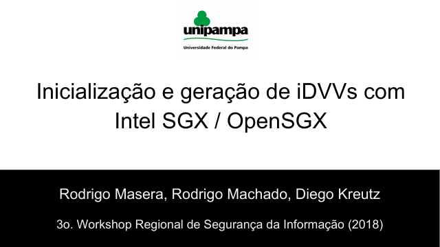
WRSeg 2018 · Regional workshop · 28 slides Inicialização e geração de iDVVs com Intel SGX e OpenSGX Rodrigo Masera, Rodrigo Machado, Diego Kreutz
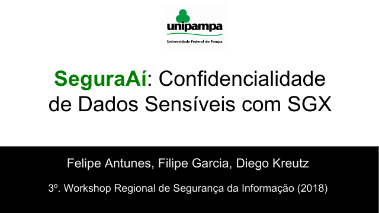
WRSeg 2018 · Regional workshop · 26 slides SeguraAí: confidencialidade de dados sensíveis com SGX Felipe Antunes, Filipe Garcia, Diego Kreutz
No examples match these filters.